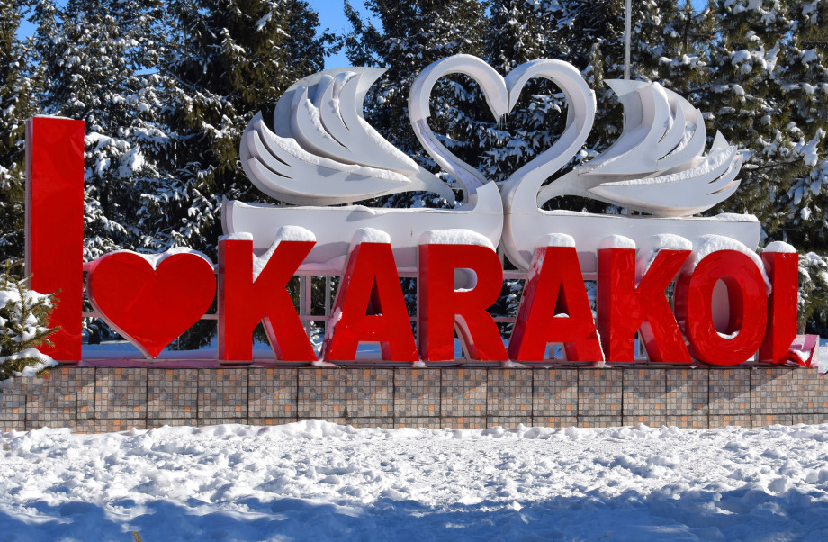

 Welcome to Karakol. Perhaps you are passing through our city, but why don't you stay in Karakol for a while? The city of Karakol has long been considered the gateway to the natural wonders of the Tien Shan Mountains and Lake Issyk-Kul. However, its unique location and amazing history have, over time, turned it into one of the most fascinating cultural and culinary destinations in Kyrgyzstan. Karakol is a city full of secrets that it is ready to share with you and tell its wonderful story. "Located on the very border of unexplored lands, Karakol became the base, the starting point for the expeditions of Nikolai Mikhailovich Przhevalsky, Vsevolod Ivanovich Roborovsky, Pyotr Kuzmich Kozlov and many others. They prepared food, attracted guides, drivers, selected people for safety and tested their equipment before the distant journey."
KARAKOL
Expedition of Nikolai Przhevalsky
"Located on the very border of unexplored lands, Karakol became the base, the starting point for the expeditions of Nikolai Mikhailovich Przhevalsky, Vsevolod Ivanovich Roborovsky, Pyotr Kuzmich Kozlov and many others. They prepared food, attracted guides, drivers, selected people for safety and tested their equipment before the distant journey."
Monument to Nikolai Przhevalsky
In 1888, on the eve of his fifth expedition, Przhevalsky contracted typhus on the Chu River and died near Karakol. He was buried on the banks of Issyk-Kul. The tsar renamed Karakol Przhevalsk to honor the memory of the explorer, however, in 1991 the original name returned to the city.
The memorial museum of Nikolai Mikhailovich Przhevalsky was opened in Karakol in 1957, including documents and exhibits from the archives of the Geographical Society of the USSR. Today, the museum's exposition includes documents, photographs and personal belongings of Przewalski. Nearby is his grave and a monument. The only problem of the museum for foreign tourists may be the fact that all descriptions of exhibits in the museum are given only in Russian.
Monuments
There are a number of monuments in the city of Karakol. Among the architectural monuments, the Victory Park (Jenish Bagy) with a total area of 8.4 hectares deserves special attention. The city park with unique alleys of Tien Shan firs is located in the southern part of the city of Karakol. The park is surrounded on all sides by a brick fence with bars. On the central road, on the left and on the right, there are 7 bronze monuments to the heroes of the Great Patriotic War, and in the center there is a monument to the heroes of the mothers about 8-10 m high. In front of it every year on Victory Day on May 9, an eternal flame burns, a military parade takes place.
In total, there are 151 veterans of the Great Patriotic War, 108 disabled veterans and 941 home front workers in the Issyk-Kul region.
All year round, newlyweds from all the villages near Karakol visit this unique park for wedding skiing, pay tribute to the ancestors of the Great Patriotic War and pray for them. Early in the morning, passing by the park, you can see people doing athletics. Also, both families and couples in love continuously walk along the alleys of the park, resting after hard work in the clean air.